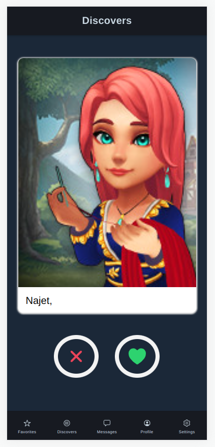
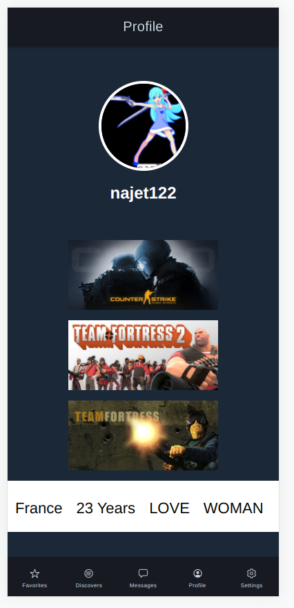

Le projet Steamer est une application mobile développée dans un cadre professionnel avec pour objectif de faciliter les interactions entre joueurs. Dans un environnement où les plateformes sociales sont nombreuses mais peu adaptées aux communautés gaming, l'ambition était de proposer une solution moderne, intuitive et performante.
L’application repose sur un système de matching intelligent inspiré des mécaniques de swipe, permettant aux utilisateurs de découvrir rapidement de nouveaux profils compatibles selon leurs préférences. Ce projet s'inscrit dans une démarche de création d’une expérience utilisateur fluide et engageante.
Le développement de cette application mobile a été réalisé avec Ionic pour la partie front-end et NestJS pour la gestion du back-end, garantissant ainsi une architecture robuste, scalable et maintenable.

Plusieurs fonctionnalités clés ont été conçues et développées afin de répondre aux besoins des utilisateurs et d’optimiser leur expérience sur l'application.

Le choix des technologies a été déterminant pour garantir la performance et la maintenabilité de l'application. Ionic a été utilisé pour développer une interface mobile cross-platform, permettant un déploiement sur Android et iOS avec une base de code unique.
Côté back-end, NestJS a permis de structurer l'application selon une architecture modulaire et scalable. L'utilisation de MariaDB pour la gestion des données a assuré une bonne performance et une fiabilité dans le stockage des informations utilisateurs.
L'ensemble du projet a été versionné avec Git, facilitant la collaboration entre les membres de l'équipe et le suivi des évolutions du code.
Le projet a été mené en équipe de 5 personnes en suivant la méthodologie Agile Scrum. Cette approche a permis de structurer le travail en sprints hebdomadaires avec des objectifs clairs et mesurables.
Des outils comme Jira et Confluence ont été utilisés pour organiser les tâches, suivre l’avancement du projet et documenter les fonctionnalités. Les réunions régulières (daily meetings, sprint review) ont favorisé une communication efficace et une amélioration continue.
L'application Steamer a permis de proposer une expérience utilisateur fluide et intuitive, avec un système de matching performant. Les utilisateurs peuvent rapidement trouver des partenaires de jeu compatibles, ce qui améliore leur engagement sur la plateforme.
Ce projet démontre également la capacité à concevoir et développer une application mobile complète, depuis la phase de conception jusqu’à la mise en production, en utilisant des technologies modernes et adaptées aux besoins actuels du marché.
Ionic est une solution idéale pour développer des applications mobiles hybrides performantes avec une seule base de code. Elle permet de réduire les coûts de développement tout en garantissant une expérience utilisateur de qualité.
NestJS, quant à lui, est un framework Node.js puissant qui facilite la création d'API robustes et maintenables. Il est particulièrement adapté aux projets nécessitant une architecture évolutive.
L'association de ces deux technologies offre une solution complète pour le développement d'applications mobiles modernes, rapides et scalables.
Le projet a été réalisé en 6 semaines avec une organisation en sprints hebdomadaires.
L'application a été développée avec Ionic pour le front-end, NestJS pour le back-end et MariaDB pour la base de données.
Oui, grâce à Ionic, l'application peut être déployée sur les deux plateformes avec une seule base de code.